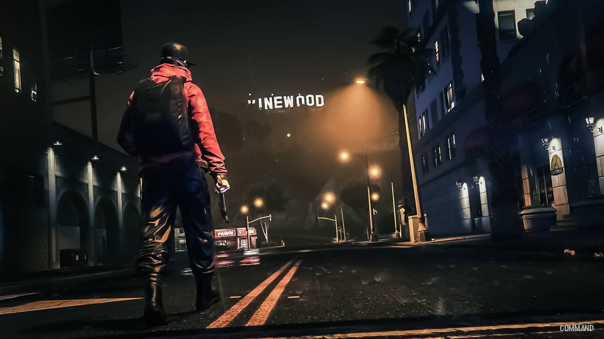
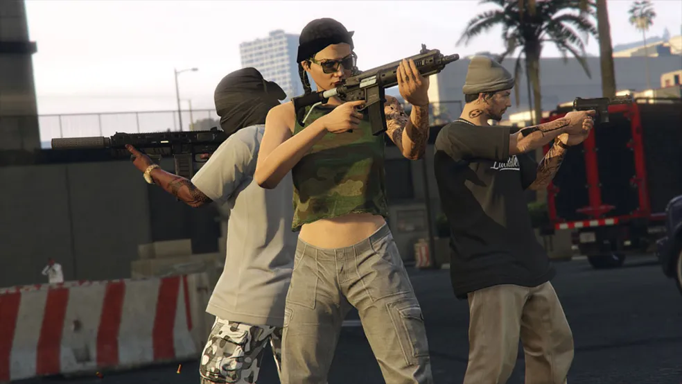
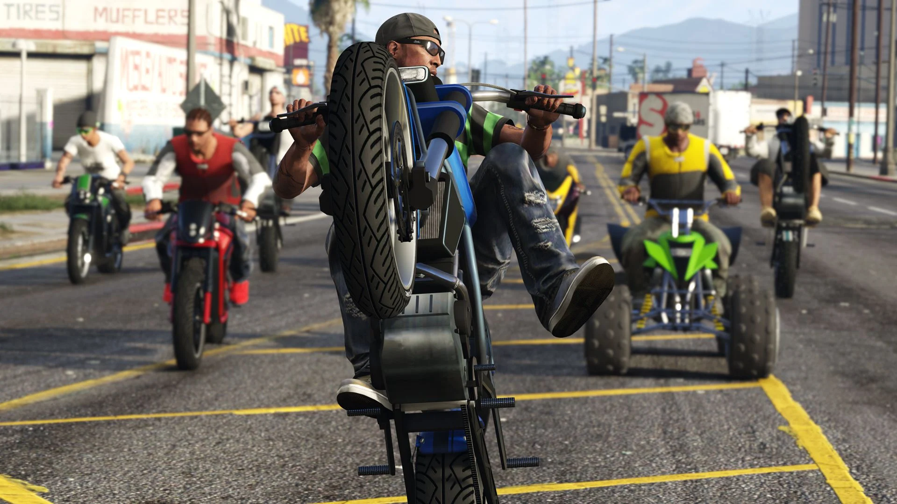
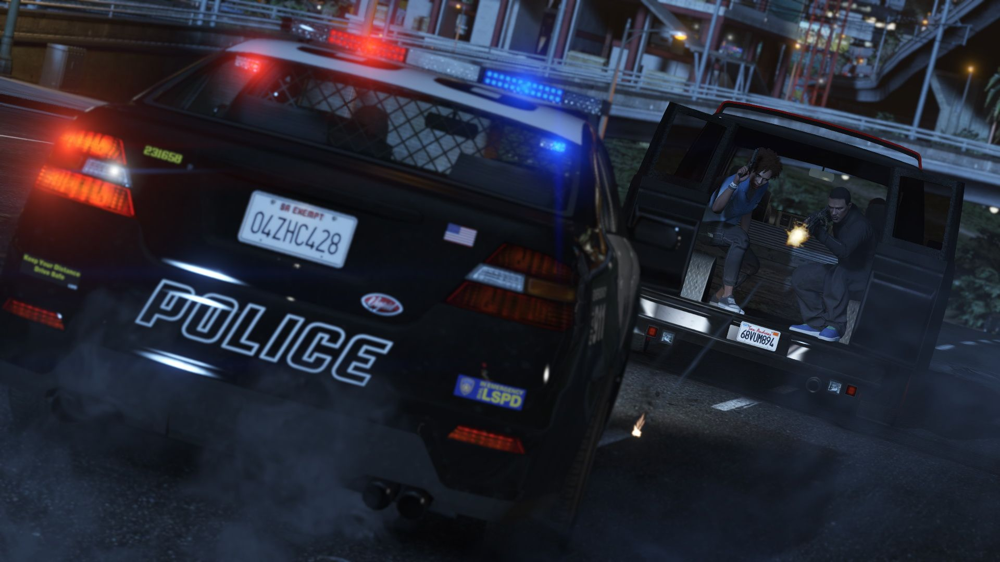
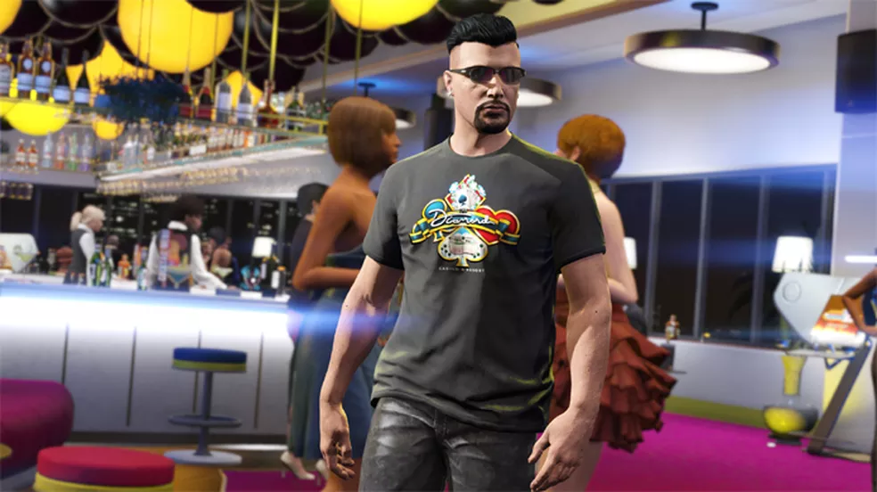
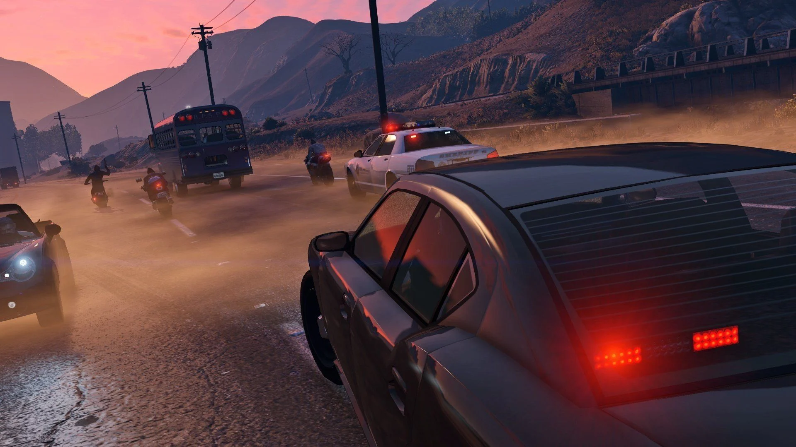
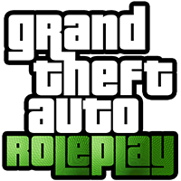

GTA RP ou Roleplay é uma modalidade com regras criadas pelos usuários. O Grand Theft Auto 5 para PC conta com uma grande comunidade de mods que adicionam novidades ao jogo. Grupos de jogadores usaram um desses modos para criar uma categoria, chamada de "GTA 5 Roleplay", em que eles interpretam o papel de personagens comuns da cidade de Los Santos em vez de protagonistas ou criminosos de GTA Online.